Opis modelu, wykorzystanego do wygenerowania podsumowania, znajduje się w zakładce Metodologia.
Poszczególne słowa zostały automatycznie pogrupowane w tematy na podstawie informacji o występowaniu w tych samych akapitach i artykułach.
Na wykresach przedstawiono współwystępowanie poszczególnych słów oraz ich kluczowość. Im czcionka jest większa i posiada ciemniejszą barwę, tym wyższa kluczowość słowa w danym miesiącu. Linie łączące wybrane słowa oznaczają, że podobieństwo cosinusowe między ich embeddingami wynosi co najmniej 0,4. W celu uproszczenia wizualizacji, dla każdego punktu na grafie wybrano maksymalnie dwa połączenia o największym stopniu podobieństwa, które spełniają wskazane kryterium. Podobieństwo cosinusowe wyznaczano za pomocą embeddingów, które są wektorową reprezentacją słów i przechowują informację współwystępowaniu w tych samych akapitach i artykułach. W przypadku grafu, który prezentuje powiązania między słowami ze wszystkich tematów, minimalne podobieństwo wynosi 0,6.
Na wykresach tematycznych przedstawiono nie więcej niż 40 najistotniejszych słów. Analogicznie, na głównym grafie umieszczono nie więcej niż 200 najistotniejszych słów w danym miesiącu.
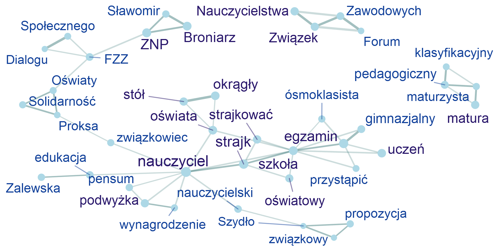
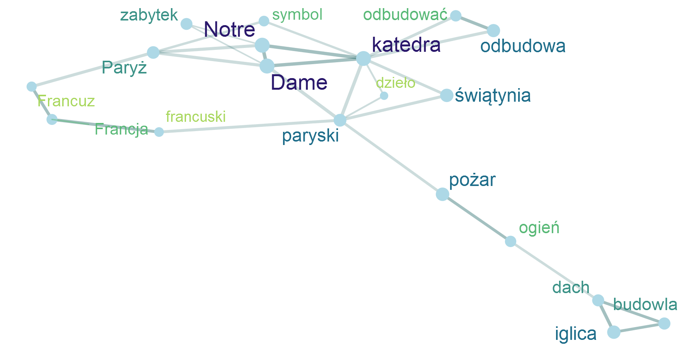
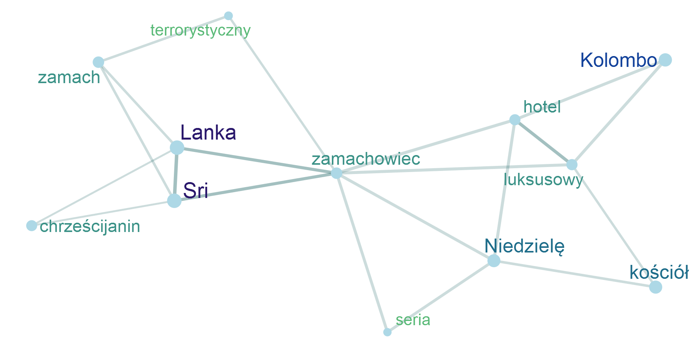
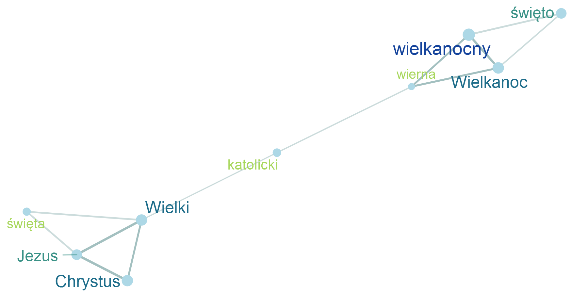
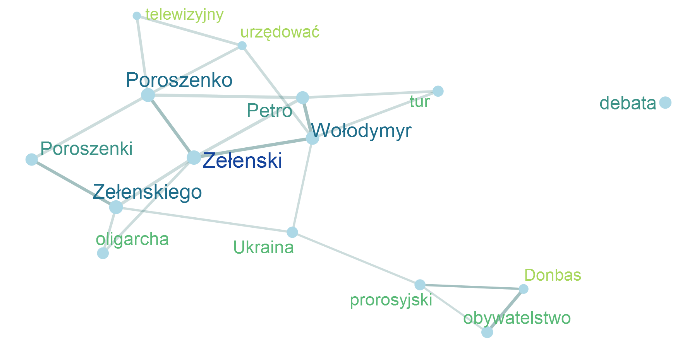
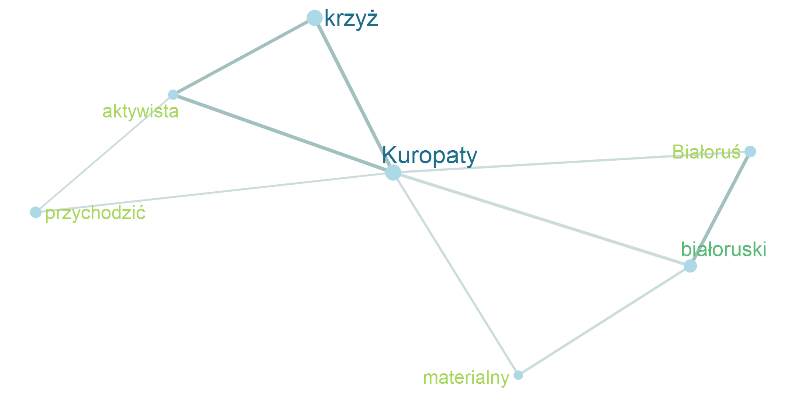
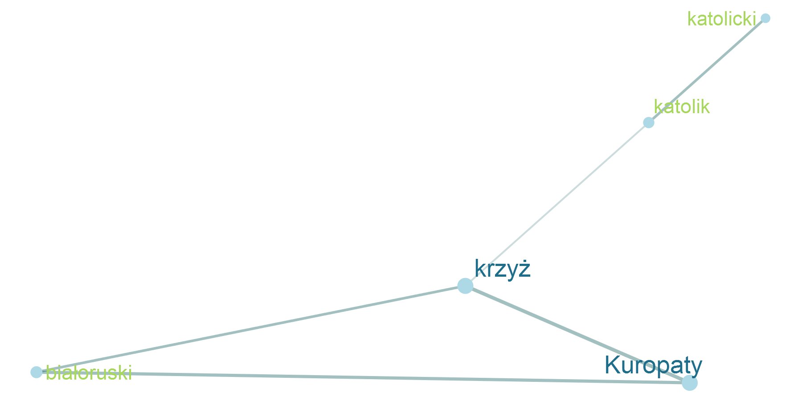
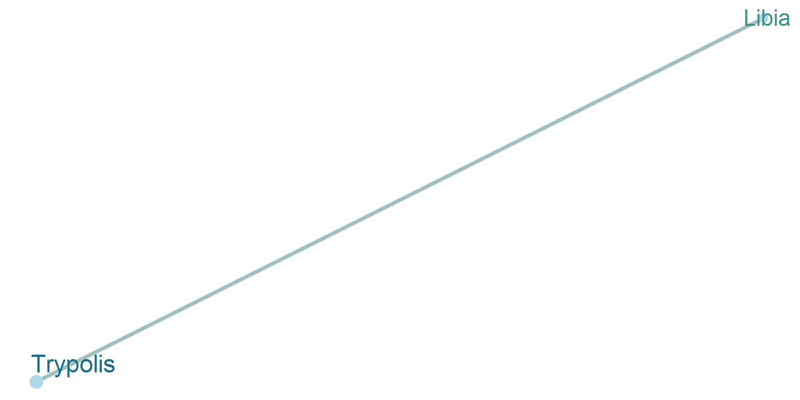
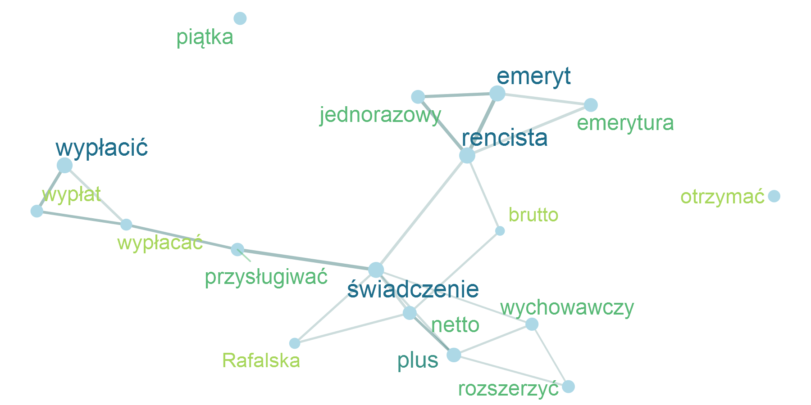
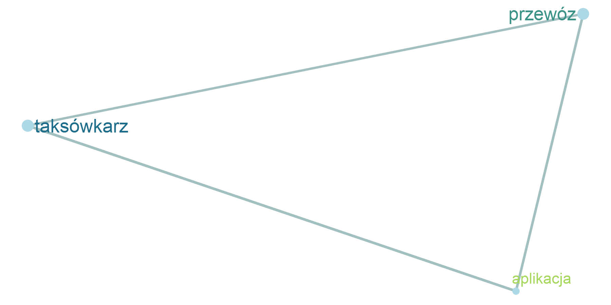
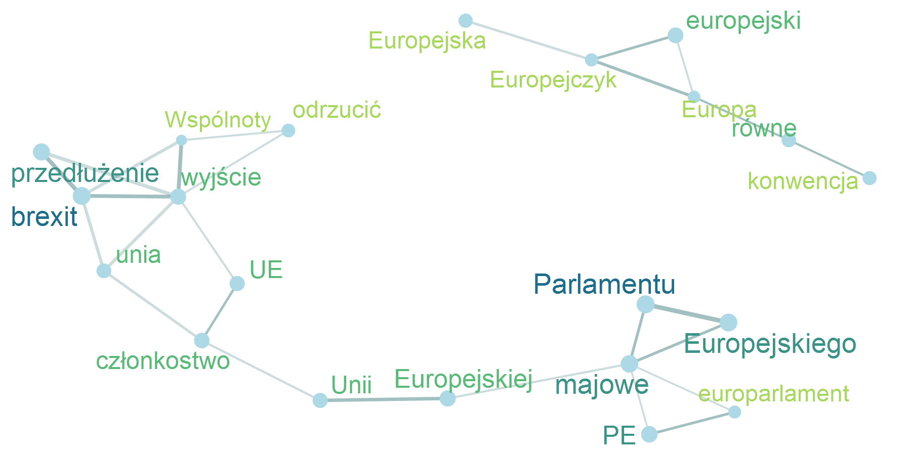
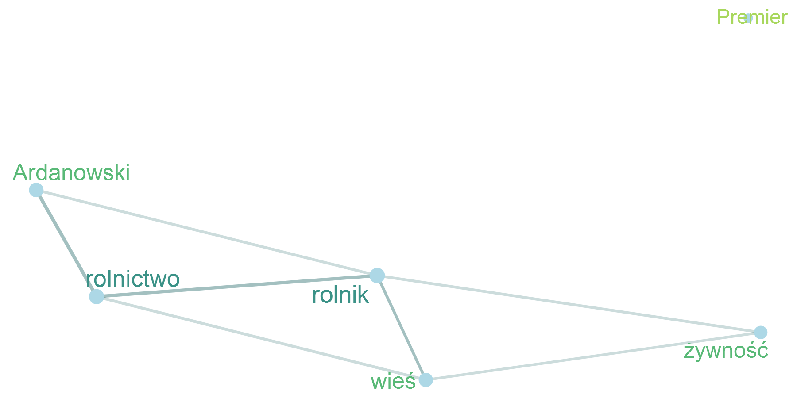
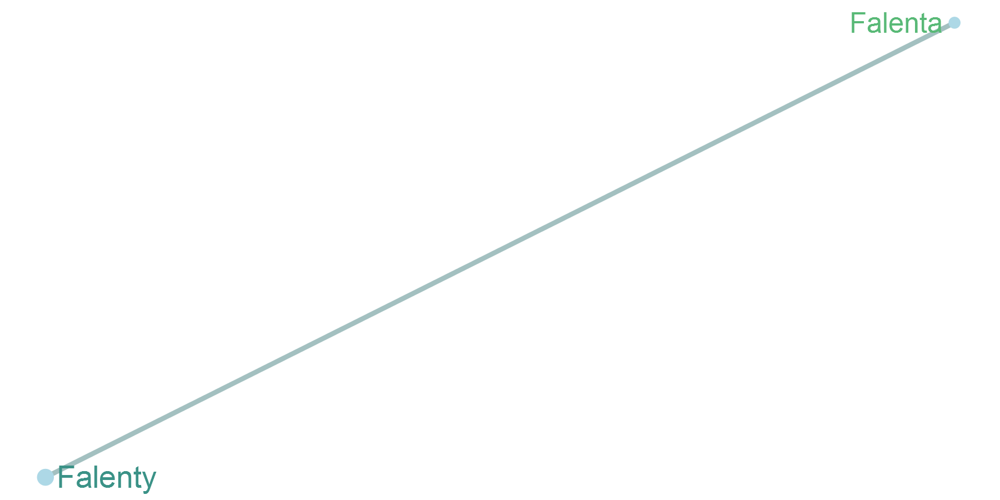
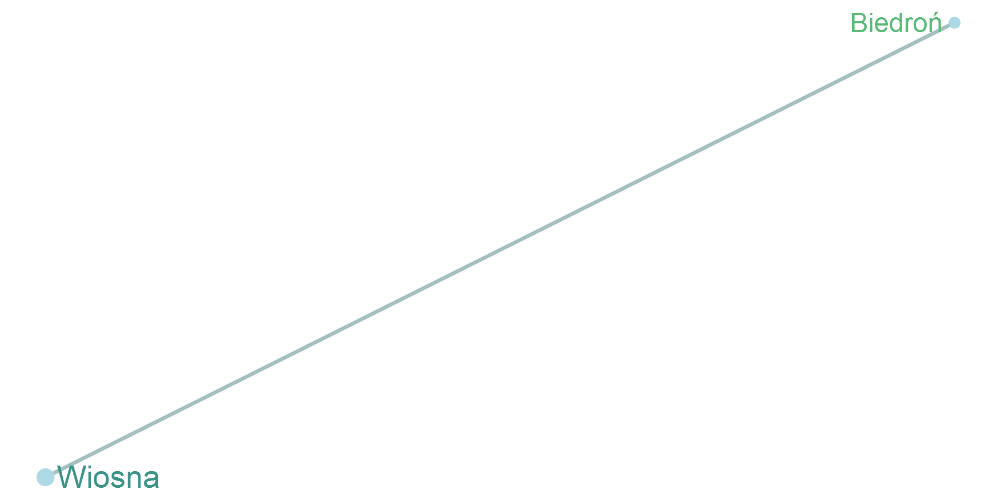